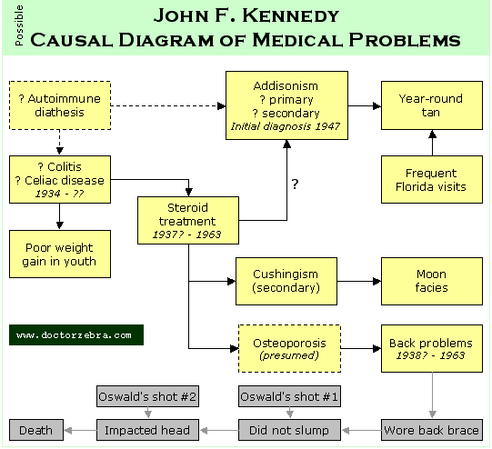

| Periodic Table of the ... Senators | |
| Doctor Zebra > Presidential health > List of Presidents > John Kennedy | [Graphical Version] |
| The Health and Medical History of President | ||||||||
John Kennedy |
||||||||
| ========> UNDER CONSTRUCTION <======== | ||||||||
| "When Kennedy ran for and won the presidency, he was essentially gambling that his health problems would not prevent him from handling the job. By hiding the extent of his ailments he denied voters the chance to decide whether they wanted to share this gamble. It is hard to believe that he could have been nominated, much less elected, if the public had known what we now know about his health." [6a] |
||||||||
| President #35. |
|
|||||||
Maladies = a mess · scarlet fever · measles · jaundice · sports injuries · minor childhood ills · sickly child · reading glasses in youth · colitis · height and weight · steroid complications · ?sexually transmitted disease · back · coral wound · malaria? and green skin · cigars · campaign exhaustion · fatigue or hypersomnolence · Addison disease · moon facies · year-round tan · celiac disease? · libido · invasion diarrhea and UTI · post-invasion depression · psycho-active poly-pharmacy · head movement · resuscitated? · three last rites ·· Odds & Ends ·· Resources |
||||||||
| Maladies and Conditions | [Top] |
| a mess | From a medical standpoint, Kennedy was a mess. For example, there is the simple fact that Kennedy was hospitalized more than three dozen times in his life [More] and given the last rites three times (see below). It will take Dr. Zebra awhile to organize and respond to the information that recently became available in The Atlantic Monthly in late 2002 [6] and Professor Dallek's book [7]. It is already clear to me, however, that Professor Dallek has not fully analyzed the implications of Kennedy's illnesses and medications. [More] Bumgarner is an excellent source of information on Kennedy's medical history [3a]. The diagram below summarizes the possible interplay between Kennedy's medical problems. The rest of this page has details.  | ||||||||||||||||||
| scarlet fever | Contracted scarlet fever in Feb. 1920 (age 2 years, 9 months) and almost died [3b]. | ||||||||||||||||||
| measles | He also contracted measles while 2 years old, as well as whooping cough and chicken pox. As a child he was susceptible to frequent upper respiratory infections [3c] and bronchitis [7e1]. | ||||||||||||||||||
| jaundice | He suffered at least one episode of jaundice as a youth [3d]. Jaundice in 1935 has been interpreted as Addisonian hyperpigmentation, but Dr. Zebra rather doubts the two conditions are easily confused [12c]. | ||||||||||||||||||
| sports injuries | As a child Kennedy sustained "many injuries and bruises [while participating] in sports where his physique was inadequate." For example, when he had a bicycle collision with his brother Joe, Joe walked away unhurt, but Jack (JFK) needed 28 stitches [3d] [7f1]. | ||||||||||||||||||
| minor childhood ills | Kennedy's mother kept a card file on the medical problem of her children [3d] [7g1]. The entries for John (more commonly known as Jack) included [3e]:
| ||||||||||||||||||
| sickly child | JFK's mother remembered him as "a very, very sick little boy" (probably in connection with the scarlet fever) and "bed-ridden and elfin-like" [3d]. | ||||||||||||||||||
| reading glasses in youth | Another entry in the Kennedy card file says "March 21, 1931: Glasses prescribed for reading by Dr. John Wheeler" [3e]. If the glasses were really for reading, this would be an indication that Kennedy had presbyopia (far-sightedness) at age 13 -- a distinctly unusual occurrence. Diphtheria is one of the few reasons a young person needs reading glasses. (See Harry Truman.) Kennedy underwent a Schick test for diphtheria in 1928 [3e], so there was at least a suspicion that he had it. | ||||||||||||||||||
| colitis | Kennedy had digestive troubles as early as 1934 (age 17) [7x]. Years later, when he joined the Navy, these were described as "severe spastic colitis" [7h1]. Dallek believes steroid treatment of Kennedy's colitis began in 1937 [7x] and ascribes several later medical problems to complications of steroids (see below). | ||||||||||||||||||
| height and weight | During his freshman year in college, Kennedy was six feet tall and weighed 149 pounds. He consumed "massive amounts" of ice cream and otherwise worked hard at gaining weight, but failed to add bulk all through college [12a]. | ||||||||||||||||||
| steroid complications | Dallek believes steroid treatment of Kennedy's colitis began in 1937 [7x]. Steroid therapy often comes at a cost, because of its propensity to cause adverse health effects. This was especially true in Kennedy's case, as steroid therapy was still new to medicine in the 1930s. The consequences of steroid excess, now known as "Cushing syndrome," were not described by Cushing until 19__.
Dallek believes steroids were the "principal contributor" to Kennedy's duodenal ulcer (see above) and back problems (see below) [7x]. (Steroids cause thinning of bones.) Steroids also altered the shape of Kennedy's face (see below) and, perhaps, body. Another complication of steroid use is suppression of adrenal gland function. Kennedy was diagnosed with underactive adrenal glands in 1947, a condition known as Addison disease (see below). If Dallek is correct, Kennedy had by then been on steroids for 10 years, although not continuously [7]. This makes it extremely difficult to know if Kennedy's Addison disease was the result of chronic steroid use, or whether it was the result of some other process (e.g. auto-immunity). | ||||||||||||||||||
| ?sexually transmitted disease | Kennnedy had "occasional burninng when urinating, which was the result of a nonspecific urethritis dating from 1940 and a possible sexual encounter in college." This was left untreated and became a chronic condition by 1946 [7i1]. At some point the illness was described as "a mild, chronic, non-specific prostatitis." Sulfa drugs were able to suppress the symptoms. [7i1]. As late as May 1955 he still had "prostatitis marked by pain when urinating and ejaculating, as well as urinary tract infections" [7j1]. In January 1956 he underwent cystoscopy under anesthesia [7d1]. Comment: Was this a sexually transmitted disease? (1) The response to sulfa suggests it was infectious. (2) Kennedy had a large number of sexual contacts before he was even out of college, and (3) it seems unlikely he practiced safe sex [7k1]. As one female acquaintance remarked, "He was not much for planning ahead" [7l1]. | ||||||||||||||||||
| back | Back problems started in 1938. From 1941 they were "a constant source of difficulty" [7x]. [There is much history here, yet to come.] Dallek has suggested that steroid treatments, "which apparently began in 1937," may have been causative [7x]. He wore a back brace. For example, on the day he was shot, he wore a brace that consisted of a canvas brace with metal stays, together with an Ace bandage with extra padding [4a]. Some people think this back brace killed him. (See below.) | ||||||||||||||||||
| coral wound | In August 1943, JFK's PT-109 was sunk by a Japanese destroyer in the South Pacific. Kennedy and the other survivors swam to an island three miles away, where they were rescued several days later. Afterwards, JFK wrote to a friend: "I went in to see the Doc about some coral infections I got. He asked me how I got them -- I said `swimming!' He then burst out with, `Kennedy, you know swimming is forbidden in this area, stay out of the goddamned water!'" [2a] Kennedy took 10 days to recover from "symptoms of fatigue and many deep abrasions and lacerations of the entire body, especially the feet" [7m1]. | ||||||||||||||||||
| malaria? and green skin | Kennedy may have contracted malaria while stationed in the Pacific. He had an illness with high fever in 1945 that was treated with atabrine (a.k.a. quinacrine). Atabrine can cause yellowish discoloration of the skin. Kennedy was well-known by Washington newspaper correspondents to have a "greenish complexion" after the war [12d]. Whether the green hue was caused by atabrine, Addisonism, or something else is unclear. | ||||||||||||||||||
| cigars | Kennedy liked to smoke cigars, but did not like to be photographed doing it. He feared it made him look like a stereotypical "old Irish pol, which he didn't want to be sees as" [1]. | ||||||||||||||||||
| campaign exhaustion | Kennedy was exhausted by the 1960 Presidential campaign. At a press conference the day after the election, "his hands, although out of camera range, trembled" [7n1]. Even two weeks later he had not fully recovered: advisor Ted Sorenson found JFK's mind neither "keen" nor "clear" and the President elect "tired" and reluctant to tackle work [7o1]. | ||||||||||||||||||
| fatigue or hypersomnolence | Kennedy was not especially concerned with the Department of Agriculture. While interviewing a candidate for ?secretary, Kennedy fell asleep [7p1]. Comment: Dallek sees this incident as indicating Kennedy's boredom with the man and the discussion, as well as evidence that Kennedy intended to rely little on his cabinet. Most sleep physicians, however, view falling asleep in a conversation as a cardinal sign of hypersomnolence. It would be interesting to know more of the interview setting, i.e. whether it was a one-on-one interview or a group effort. Falling asleep in a one-on-one conversation would be remarkable indeed. | ||||||||||||||||||
| Addison disease | Kennedy's Addisonism was diagnosed in 1947 by a physician in London. Kennedy had probably been suffering (literally) from the disease for years, if not decades. After the diagnosis, he was given less than a year to live. He was so ill during the sea voyage home from England, in October 1947, that he was given the last rights [3f]. Yet, during the 1960 presidential race, the JFK campaign flatly denied that JFK had Addison disease. The Kennedy campaign used a very narrow definition of Addision disease, namely, insufficiency of the adrenal glands caused by tuberculosis. This was deliberate, calculated, and grossly misleading. Bumgarner calls it "undoubtedly one of the most cleverly laid smoke screens ever put down around a politician" [More] [3g]. Adrenal insufficiency, no matter how caused, is a serious matter. [More] Dallek reports that "Doctors who treated Jack's Addison's or read closely about his condition have concluded that he had a secondary form of the disease, or a 'slow atrophy of of the adrenal glands,' rather than a rapid primary destruction" [7q1]. Dallek is hinting that Kennedy's Addisonism was due to chronic use of steroids, but he does not take a stand. While a U.S. Senator, Kennedy underwent major surgery on his back even though the effects of Addison disease on the tolerance of surgery was largely unknown at the time. [14]. In fact, JFK's case was published in the medical literature in 1955, although this was not publicly realized until 1967 [4b]. Post-operatively, he developed a urinary tract infection and had a transfusion reaction, characterized by "mild angioneurotic edema." He also had a repeat operation four months later [14]. | ||||||||||||||||||
| moon facies | Kennedy worried about the effects on his appearance of the steroids he took as treatment for Addison disease. The steroids made his face look puffy and made him look overweight. Four days before his inauguration Kennedy caught sight of himself in a mirror and declared "My God, look at that fat face, if I don't lose five pounds this week we might have to call off the Inauguration." Kennedy's secretary heard this and could barely contain her laughter. [7s1] Comment: Steroids classically cause a facial appearance known as "moon facies." This refers to the round shape the face assumes. Dr. Zebra always checks for moon facies by looking at the outer corner of the eye sockets. If there is facial tissue behind the eyes that projects laterally from the bony outer border of the orbit, then some degree of moon facies are present. Several photographs of Kennedy have this appearance. | ||||||||||||||||||
| year-round tan | It is sometimes mentioned that Kennedy had a tan year-round. In most of North America, this is unusual, and raises the question of disease. Addison disease, for example, causes bronzing of the skin that is often mistaken for a tan. (An Addisonian tan would suggest that, despite the use of steroids, Kennedy's Addisonism was under-treated.)
To be sure, Addisonism may not be the whole story. Even in youth, Kennedy liked having a tan, saying "It gives me confidence. ... It makes me feel strong, healthy, attractive" [7t1]. | ||||||||||||||||||
| celiac disease? | There is speculation that Kennedy's gastrointestinal ills were due to celiac disease. Of note, there is an association between celiac disease and Addison disease [15]. | ||||||||||||||||||
| libido | In 1963 JFK confided to Britain's Prime Minister Macmillan that he got a headache if he went too long without a woman [17a]. Kennedy's close friend, Senator George Smathers, once remarked "He has the most active libido of any man I have ever known," and a fellow congressman observed that "traveling with him was like traveling with a bull" [17b]. | ||||||||||||||||||
| invasion diarrhea and UTI | Immediately before and after the failed invasion at the Bay of Pigs in Cuba (April 17-18, 1961), Kennedy had "constant," "acute diarrhea." He simultaneously had a urinary tract infection. The treatment included increased anti-spasmodic medication, a puree diet, and penicillin. He was also scheduled for a sigmoidoscopy. [7u1] | ||||||||||||||||||
| post-invasion depression | Though composed and philosophical in public, in private Kennedy was deeply depressed after the Bay of Pigs invasion fiasco. On April 19, 1961 his wife Jackie remarked that the only time she had seen him more depressed was in connection with surgery. The same day Pierre Salinger found him weeping in his bedroom. Shortly after Kennedy appeared at a meeting with Senator Albert Gore (the father), his hair unruly and his tie askew [7v1]. At a Cabinet meeting on April 20 he looked "quote shattered" and would talk to himself. Even weeks after the invasion he could not sleep [7u1]. | ||||||||||||||||||
| psycho-active poly-pharmacy | During the first six months of his presidency, Kennedy's physicians "administered large doses of so many drugs that [Dr. Janet] Travell kept a `Medicine Administration Record'" [6b]. Many of the drugs Kennedy received affect thinking:
To put things in a different light, if an officer in the U.S. Air Force were taking any one of these medications, he or she would not even be allowed to talk on the radio to aircraft as supervisor of flying. Kennedy, as commander-in-chief, was supervisor for the entire Air Force. Question: Did the Bay of Pigs result from Kennedy talking, or was it the testosterone talking? [More] | ||||||||||||||||||
| head movement | Massive sympathetic discharge is postulated to cause his head to move toward the bullet's approach path [9]. Some think that Kennedy's back brace killed him [4a] [6]. It kept him erect after Oswald's first bullet went through his neck. Had he been able to fall forward after this first bullet hit, the second, fatal bullet may have missed him. | ||||||||||||||||||
| Death: resuscitated? |
There is a legend that Kennedy's heartbeat was resuscitated in the Parkland ER. But now what are you going to do with a President whose brain has flowed out onto the stretcher? | ||||||||||||||||||
| Death: three last rites |
Kennedy received the last rites three times:
|
| Odds & Ends | [Top] |
| Resources | [Top] |
| Alternate index terms: Medical history of President Kennedy, Medical history of President John F. Kennedy, Medical history of President John Fitzgerald Kennedy, Medical history of JFK, Medical history of Jack Kennedy. | [Top] |
| Dr Zebra | Prez Home | Search | Contact us | Back | Top |